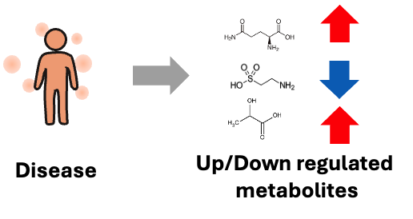
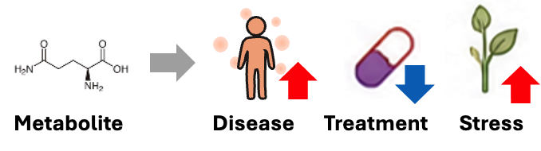

Quick Start
This guide helps you get started with integMET in a few minutes.
What You Can Do
- Explore Differential Profiles — Browse biological comparisons (e.g., control vs. disease) together with metabolic changes
- Find Metabolites — Search for specific metabolites and trace their changes across studies
- Browse Studies — Find metabolomics studies by condition, disease, or species
Example Workflows
Workflow A: Start from a Condition

"I'm interested in a disease or condition — what metabolites change?"
"I'm interested in the effect of a drug — what metabolites change?"
- Go to Diff Profiles
- Browse or search for DiffProfs to your interest.
- Click a DiffProf to see its details
- Examine the Top Hits — metabolites with significant changes
Workflow B: Start from a Metabolite

"I have a metabolite of interest — in which biological event/condition does it change?"
- Go to Metabolites
- Find your metabolite by name or identifier
- Click to view its detail page
- See Observed in differential profiles — where this metabolite changed significantly.
Workflow C: Start from a Study
"I'm interested in this study — what kind of metabolic change can be seen?"
- Go to Studies
- Find a study of interest
- Click to view its detail page
- See Differential profiles — the list of DiffProfs derived from this study data
- Click a DiffProf to see its metabolic changes
Understanding the Data
Reading a DiffProf
When you view a Differential Profile, you'll see:
| Field | Meaning |
|---|---|
| Group A vs Group B | The two conditions being compared |
| Significant Features | Number of metabolites with significant changes |
| Top Hits | List of changed metabolites |
| Ratio | Fold-change (>1 = increased, <1 = decreased in Group B) |
| Direction | up or down in Group B relative to Group A |
Reading a Metabolite Page
When you view a Metabolite, you'll see:
| Field | Meaning |
|---|---|
| InChIKey | Unique chemical identifier |
| Studies Observed | All studies where this metabolite was detected |
| DiffProfs with Variation | DiffProfs where this metabolite changed significantly |
Tips
- Start broad, then narrow down — Browse studies first, then drill into specific DiffProfs
- Use metabolites as links — A metabolite connects multiple studies and conditions
- Look for patterns — If a metabolite changes across multiple DiffProfs, it may indicate a common biological response
Next Steps
- Read Concepts to understand Differential Profiles in depth
- Explore the Data Model to understand how data is organized
- Learn about Network Visualization to find similar DiffProfs